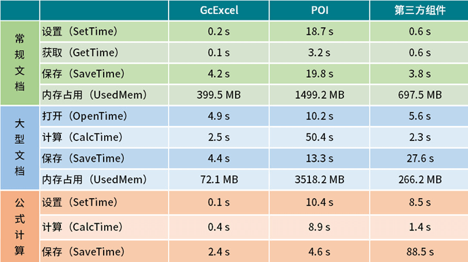
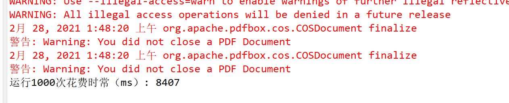
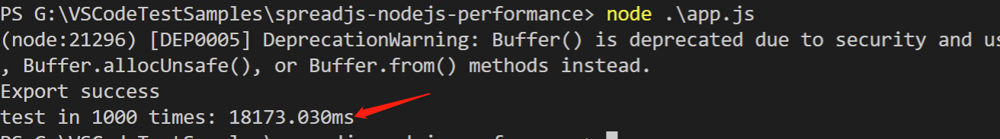

上一篇介绍了怎样在Nodejs环境中搭建SpreadJS的运行环境，本篇博客是此系列的第二篇，重点在于对比GcExcel for Java和Node.js中运行SpreadJS的性能比较，以及选型建议和总结。由于SpreadJS和GcExcel的功能非常丰富，本文仅选择最为常见的两个功能点做对比，分别是设置区域数据，并导出Excel文档。对 GcExcel 不熟悉的同学，可以先看一下上边链接的官网主页，如果用过Apache POI的小伙伴，看一下这张图就知道，相对于 SpreadJS with Node.js，GcExcel的确是个强大的对手：

第二篇：SpreadJS 对比 GcExcel
几个前提：
首先，众所周知，Node.js是基于V8引擎来执行JavaScript的，因此它的js也是基于事件机制的非阻塞单线程运行，文件的I/O都是异步执行的。单线程的好处在于编码简单，开发难度低，心智消耗相对较小（对咱们码农比较友好）；而且它的文件的I/O是异步执行的，不像Java这种需要创建、回收线程（Node.js的IO操作在底层也是线程，这里不做深入讨论），这方面开销较小。
但是，相对的，单线程在做复杂运算方面相比多线程语言，没有优势，无法利用多线程来有效调配多核CPU进行优化；对于Node.js来说这个问题并非无解，但咱们这个专题讨论的大前提是基于SpreadJS的，这方面以后可能会再开新坑，因此本问在Node.js中运行SpreadJS就只能是单线程JS。
因此，基于以上前提，本篇中设计的测试案例，在两个环境（Java 和 Node.js）中，都采用单线程执行，看看在性能上能否有得一战。
GCExcel 测试代码和结果：
代码非常简单，一个Performance类中执行了1000次设置数据、导出Excel文档的操作，如下所示：
1 | public class Performance { |
完整的工程zip请参考附件：GcExcelPerformanceSample.zip
运行方式：导入Eclipse后直接run as Application
运行结果：

Node.js 与 SpreadJS的测试代码和结果：
同样，代码没什么好讲的，如果有问题，走传送门回到第一篇复习一下~
1 | const fs = require('fs'); |
完整的Demo工程请参考附件：spreadjs-nodejs-performance.zip
运行方式：
1 | npm install |
运行结果：

本机配置：i7-9750H & 32G
总结：
- 从性能上分析：
SpreadJS with Node.js 与 GcExcel for Java 相比性能的确有差别，一方面由于GcExcel性能确实非常优异，它不需要考虑渲染的问题，且本身处理性能远超Apache POI，因此对于正常需求，SpreadJS with Node.js在性能上是完全可用的； - 从编码难度上分析：
如果前端采用SpreadJS进行交互，那后端用SpreadJS与前端交互似乎是顺理成章的事情，这无疑大大扩展了前端的功能范畴。且由于前后端采用了完全相同的控件，前后端数据、用户操作、事件等的同步实现起来会非常容易，这点在需要协同的系统中会非常有用，这点未来我还会开新坑介绍。 - 从技术选型上分析：
虽然SpreadJS需要依赖诸如mock-browser / jsdom等第三方的组件才能在Node.js中正常运行，但这几个库也都是广泛使用的开源库，对于具备一定技术实例的团队，这里的风险是完全可控的。相对的，功能上的回报会丰厚很多，在节约了一笔不小的授权费用基础上，实现了批量处理Excel、PDF、打印的同时，也实现了诸如前后端结合解决大文件加载、计算的问题，也可以在多人协同文档的实现中提供更多更灵活的可选方案。
本篇涉及到的工程包：
- GcExcel for Java 测试工程：GcExcelPerformanceSample.zip
- SpreadJS with Node.js 测试工程：spreadjs-nodejs-performance.zip